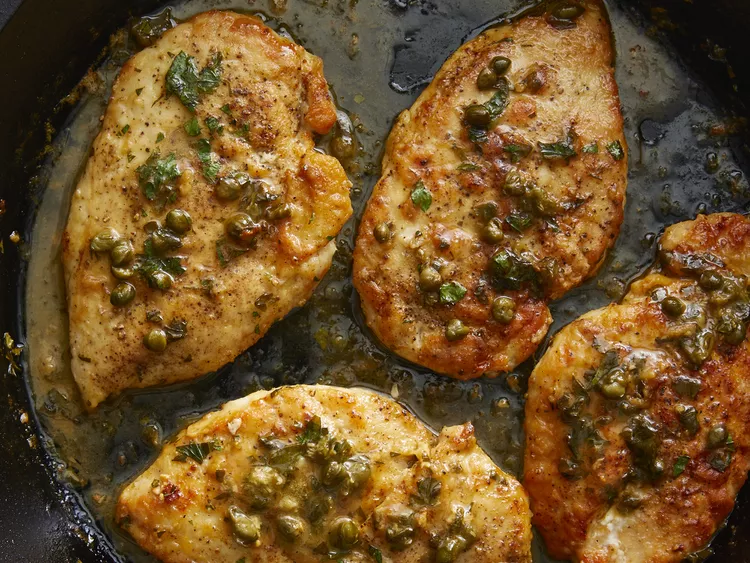

This chicken piccata recipe is super quick and easy to make in less than 30 minutes with pounded chicken breasts and a simple pan sauce made with capers, butter, white wine, and lemon juice.

Prep Time: 10 mins
Cook Time: 15 mins
Total Time: 25 mins
Servings: 4
Ingredients
4 skinless, boneless chicken breast halves
Cayenne pepper to taste
Salt and ground black pepper to taste
All-purpose flour for dredging
2 tablespoons olive oil
1 tablespoon capers, drained
½ cup white wine
¼ cup fresh lemon juice
¼ cup water
3 tablespoons cold unsalted butter, cut in ¼-inch slices
2 tablespoons chopped fresh Italian parsley
Directions
Place chicken breasts between 2 sheets of heavy plastic on a solid, level surface. Firmly pound chicken breasts with the smooth side of a meat mallet to a 1/2-inch thickness.
Season both sides of chicken breasts with cayenne, salt, and black pepper; dredge lightly in flour and shake off any excess.
Heat olive oil in a skillet over medium-high heat. Place chicken in the pan, reduce heat to medium, and cook until browned and cooked through, about 5 minutes per side; transfer to a plate.
Cook capers in reserved oil, smashing them lightly to release brine, until warmed through, about 30 seconds. Pour white wine into the skillet and bring to a boil while scraping the browned bits of food off the bottom of the pan with a wooden spoon. Cook until reduced by half, about 2 minutes.
Stir lemon juice, water, and butter into the reduced wine mixture; cook and stir continuously to form a thick sauce, about 2 minutes. Reduce heat to low and stir parsley through the sauce.
Return chicken breasts to the pan and cook until heated through, 1 to 2 minutes. Serve with sauce spooned over the top.